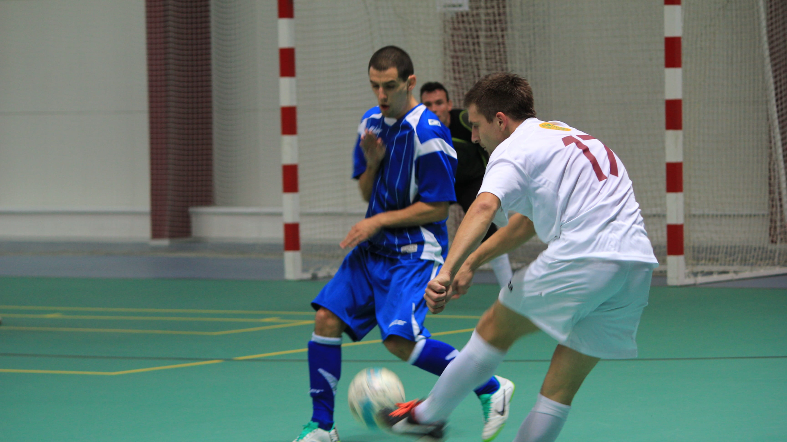

Ekstrakurikuler SMPN STAP 1 BANGODUA
🏕️ Pramuka
Pramuka merupakan salah satu kegiatan ekstrakurikuler unggulan di SMP kami yang berfokus pada pembentukan karakter, kedisiplinan, dan jiwa kepemimpinan. Melalui berbagai kegiatan seperti latihan baris-berbaris, pertolongan pertama, hingga perkemahan, siswa dilatih untuk mandiri, tangguh, dan peduli terhadap sesama.
Kegiatan Pramuka juga menjadi wadah untuk menumbuhkan rasa cinta tanah air dan kebersamaan antar siswa. Dengan bimbingan pembina berpengalaman, setiap anggota diajarkan nilai-nilai dasar kepramukaan yang membentuk pribadi yang berani, bertanggung jawab, serta siap menghadapi tantangan masa depan.
- Jadwal: Setiap Senin dan Rabu, pukul 15:00-17:00
- Pembina: Pak Ahmad
🥋 Pencak Silat
Pencak Silat adalah seni bela diri tradisional Indonesia yang tidak hanya melatih kekuatan fisik, tetapi juga membentuk mental dan karakter yang kuat. Di SMP kami, kegiatan ini menjadi salah satu ekstrakurikuler yang sangat diminati karena memadukan unsur olahraga, seni, dan budaya.
Melalui latihan rutin, siswa diajarkan teknik dasar seperti kuda-kuda, tangkisan, dan jurus, serta filosofi luhur Pencak Silat yang menanamkan nilai kesopanan, sportivitas, dan rasa hormat. Kegiatan ini juga menjadi sarana pelestarian budaya bangsa yang mempererat rasa bangga terhadap warisan Indonesia.
- Jadwal: Setiap Selasa dan Kamis, pukul 16:00-18:00
- Pembina: Bu Siti

⚽ Futsal
Futsal adalah kegiatan olahraga tim yang sangat digemari oleh siswa SMP kami. Melalui ekstrakurikuler ini, siswa belajar teknik dasar penguasaan bola, strategi permainan, serta kerja sama tim yang baik di lapangan.
Kegiatan futsal tidak hanya menyehatkan tubuh, tetapi juga melatih konsentrasi, komunikasi, dan tanggung jawab antar pemain. Latihan rutin dan pertandingan antar kelas menjadi momen seru yang selalu dinantikan. Selain itu, tim futsal sekolah juga sering mengikuti turnamen tingkat kecamatan untuk mengasah kemampuan dan menumbuhkan semangat berprestasi.
- Jadwal: Setiap Jumat, pukul 15:30-17:30
- Pembina: Pak Budi